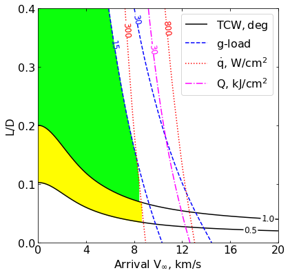
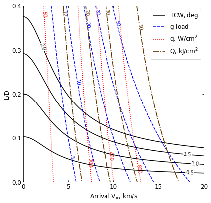

05 - a - Mars - Feasibility Charts - Lift¶
[1]:
from AMAT.planet import Planet
from AMAT.vehicle import Vehicle
import numpy as np
from scipy import interpolate
import matplotlib.pyplot as plt
from matplotlib import rcParams
from matplotlib.patches import Polygon
import os
[2]:
# Create a planet object
planet=Planet("MARS")
planet.h_skip = 120000.0
# Load an nominal atmospheric profile with height, temp, pressure, density data
planet.loadAtmosphereModel('../atmdata/Mars/mars-gram-avg.dat', 0 , 1 ,2, 3 )
vinf_kms_array = np.linspace( 0.0, 20.0, 11)
LD_array = np.linspace( 0.0, 0.4 , 11)
[3]:
os.makedirs('../data/jsr-paper/mars/')
[4]:
runID = 'mars-lift-'
num_total = len(vinf_kms_array)*len(LD_array)
count = 1
v0_kms_array = np.zeros(len(vinf_kms_array))
v0_kms_array[:] = np.sqrt(1.0*(vinf_kms_array[:]*1E3)**2.0 +\
2*np.ones(len(vinf_kms_array))*\
planet.GM/(planet.RP+120.0*1.0E3))/1.0E3
overShootLimit_array = np.zeros((len(v0_kms_array),len(LD_array)))
underShootLimit_array = np.zeros((len(v0_kms_array),len(LD_array)))
exitflag_os_array = np.zeros((len(v0_kms_array),len(LD_array)))
exitflag_us_array = np.zeros((len(v0_kms_array),len(LD_array)))
TCW_array = np.zeros((len(v0_kms_array),len(LD_array)))
[5]:
for i in range(0,len(v0_kms_array)):
for j in range(0,len(LD_array)):
vehicle=Vehicle('Apollo', 1000.0, 200.0, LD_array[j], 3.1416, 0.0, 1.00, planet)
vehicle.setInitialState(110.0,0.0,0.0,v0_kms_array[i],0.0,-4.5,0.0,0.0)
vehicle.setSolverParams(1E-5)
overShootLimit_array[i,j], exitflag_os_array[i,j] = vehicle.findOverShootLimit (2400.0, 1.0, -80.0, -4.0, 1E-10, 400.0)
underShootLimit_array[i,j], exitflag_us_array[i,j] = vehicle.findUnderShootLimit(2400.0, 1.0, -80.0, -4.0, 1E-10, 400.0)
TCW_array[i,j] = overShootLimit_array[i,j] - underShootLimit_array[i,j]
print("Run #"+str(count)+" of "+ str(num_total)+": Arrival V_infty: "+str(vinf_kms_array[i])+" km/s"+", L/D:"+str(LD_array[j]) + " OSL: "+str(overShootLimit_array[i,j])+" USL: "+str(underShootLimit_array[i,j])+", TCW: "+str(TCW_array[i,j])+" EFOS: "+str(exitflag_os_array[i,j])+ " EFUS: "+str(exitflag_us_array[i,j]))
count = count +1
np.savetxt('../data/jsr-paper/mars/'+runID+'vinf_kms_array.txt',vinf_kms_array)
np.savetxt('../data/jsr-paper/mars/'+runID+'v0_kms_array.txt',v0_kms_array)
np.savetxt('../data/jsr-paper/mars/'+runID+'LD_array.txt',LD_array)
np.savetxt('../data/jsr-paper/mars/'+runID+'overShootLimit_array.txt',overShootLimit_array)
np.savetxt('../data/jsr-paper/mars/'+runID+'exitflag_os_array.txt',exitflag_os_array)
np.savetxt('../data/jsr-paper/mars/'+runID+'undershootLimit_array.txt',underShootLimit_array)
np.savetxt('../data/jsr-paper/mars/'+runID+'exitflag_us_array.txt',exitflag_us_array)
np.savetxt('../data/jsr-paper/mars/'+runID+'TCW_array.txt',TCW_array)
Run #1 of 121: Arrival V_infty: 0.0 km/s, L/D:0.0 OSL: -8.77632667801663 USL: -8.77632667801663, TCW: 0.0 EFOS: 1.0 EFUS: 1.0
Run #2 of 121: Arrival V_infty: 0.0 km/s, L/D:0.04 OSL: -8.683558818767779 USL: -8.877132149777026, TCW: 0.19357333100924734 EFOS: 1.0 EFUS: 1.0
Run #3 of 121: Arrival V_infty: 0.0 km/s, L/D:0.08 OSL: -8.598265705531958 USL: -8.987268374785344, TCW: 0.38900266925338656 EFOS: 1.0 EFUS: 1.0
Run #4 of 121: Arrival V_infty: 0.0 km/s, L/D:0.12 OSL: -8.519817374577542 USL: -9.107128531341004, TCW: 0.5873111567634623 EFOS: 1.0 EFUS: 1.0
Run #5 of 121: Arrival V_infty: 0.0 km/s, L/D:0.16 OSL: -8.447731623618893 USL: -9.237863072052278, TCW: 0.7901314484333852 EFOS: 1.0 EFUS: 1.0
Run #6 of 121: Arrival V_infty: 0.0 km/s, L/D:0.2 OSL: -8.38141107948104 USL: -9.37940185757543, TCW: 0.9979907780943904 EFOS: 1.0 EFUS: 1.0
Run #7 of 121: Arrival V_infty: 0.0 km/s, L/D:0.24 OSL: -8.32016548698084 USL: -9.532567995771387, TCW: 1.2124025087905466 EFOS: 1.0 EFUS: 1.0
Run #8 of 121: Arrival V_infty: 0.0 km/s, L/D:0.28 OSL: -8.263831434782333 USL: -9.69797424960052, TCW: 1.4341428148181876 EFOS: 1.0 EFUS: 1.0
Run #9 of 121: Arrival V_infty: 0.0 km/s, L/D:0.32 OSL: -8.21189177645283 USL: -9.87553206855955, TCW: 1.6636402921067202 EFOS: 1.0 EFUS: 1.0
Run #10 of 121: Arrival V_infty: 0.0 km/s, L/D:0.36 OSL: -8.163326257377776 USL: -10.067306923967408, TCW: 1.9039806665896322 EFOS: 1.0 EFUS: 1.0
Run #11 of 121: Arrival V_infty: 0.0 km/s, L/D:0.4 OSL: -8.118012498529424 USL: -10.272558619457413, TCW: 2.1545461209279893 EFOS: 1.0 EFUS: 1.0
Run #12 of 121: Arrival V_infty: 2.0 km/s, L/D:0.0 OSL: -9.360045155706757 USL: -9.360045155706757, TCW: 0.0 EFOS: 1.0 EFUS: 1.0
Run #13 of 121: Arrival V_infty: 2.0 km/s, L/D:0.04 OSL: -9.248011141946336 USL: -9.48409181297393, TCW: 0.23608067102759378 EFOS: 1.0 EFUS: 1.0
Run #14 of 121: Arrival V_infty: 2.0 km/s, L/D:0.08 OSL: -9.14720365453104 USL: -9.620557744492544, TCW: 0.47335408996150363 EFOS: 1.0 EFUS: 1.0
Run #15 of 121: Arrival V_infty: 2.0 km/s, L/D:0.12 OSL: -9.055978436783334 USL: -9.770798861980438, TCW: 0.7148204251971038 EFOS: 1.0 EFUS: 1.0
Run #16 of 121: Arrival V_infty: 2.0 km/s, L/D:0.16 OSL: -8.972935487912764 USL: -9.935774654080888, TCW: 0.9628391661681235 EFOS: 1.0 EFUS: 1.0
Run #17 of 121: Arrival V_infty: 2.0 km/s, L/D:0.2 OSL: -8.89726034924388 USL: -10.115512730932096, TCW: 1.2182523816882167 EFOS: 1.0 EFUS: 1.0
Run #18 of 121: Arrival V_infty: 2.0 km/s, L/D:0.24 OSL: -8.828355766352615 USL: -10.31233274726037, TCW: 1.4839769809077552 EFOS: 1.0 EFUS: 1.0
Run #19 of 121: Arrival V_infty: 2.0 km/s, L/D:0.28 OSL: -8.765284962362784 USL: -10.526040552318591, TCW: 1.7607555899558065 EFOS: 1.0 EFUS: 1.0
Run #20 of 121: Arrival V_infty: 2.0 km/s, L/D:0.32 OSL: -8.707325696625048 USL: -10.757135331292375, TCW: 2.0498096346673265 EFOS: 1.0 EFUS: 1.0
Run #21 of 121: Arrival V_infty: 2.0 km/s, L/D:0.36 OSL: -8.653971983356314 USL: -11.007852509541408, TCW: 2.353880526185094 EFOS: 1.0 EFUS: 1.0
Run #22 of 121: Arrival V_infty: 2.0 km/s, L/D:0.4 OSL: -8.604488544329797 USL: -11.27748163392971, TCW: 2.672993089599913 EFOS: 1.0 EFUS: 1.0
Run #23 of 121: Arrival V_infty: 4.0 km/s, L/D:0.0 OSL: -10.388590701957582 USL: -10.388590701957582, TCW: 0.0 EFOS: 1.0 EFUS: 1.0
Run #24 of 121: Arrival V_infty: 4.0 km/s, L/D:0.04 OSL: -10.232870283653028 USL: -10.564615012659488, TCW: 0.33174472900645924 EFOS: 1.0 EFUS: 1.0
Run #25 of 121: Arrival V_infty: 4.0 km/s, L/D:0.08 OSL: -10.09584721450301 USL: -10.763029991459916, TCW: 0.6671827769569063 EFOS: 1.0 EFUS: 1.0
Run #26 of 121: Arrival V_infty: 4.0 km/s, L/D:0.12 OSL: -9.975123591299052 USL: -10.986753151286393, TCW: 1.011629559987341 EFOS: 1.0 EFUS: 1.0
Run #27 of 121: Arrival V_infty: 4.0 km/s, L/D:0.16 OSL: -9.868668477116444 USL: -11.236453874051222, TCW: 1.367785396934778 EFOS: 1.0 EFUS: 1.0
Run #28 of 121: Arrival V_infty: 4.0 km/s, L/D:0.2 OSL: -9.774435191204248 USL: -11.515630152814992, TCW: 1.741194961610745 EFOS: 1.0 EFUS: 1.0
Run #29 of 121: Arrival V_infty: 4.0 km/s, L/D:0.24 OSL: -9.691109289065935 USL: -11.8253678240726, TCW: 2.1342585350066656 EFOS: 1.0 EFUS: 1.0
Run #30 of 121: Arrival V_infty: 4.0 km/s, L/D:0.28 OSL: -9.616328349820833 USL: -12.168176836450584, TCW: 2.5518484866297513 EFOS: 1.0 EFUS: 1.0
Run #31 of 121: Arrival V_infty: 4.0 km/s, L/D:0.32 OSL: -9.54841478849994 USL: -12.547440179187106, TCW: 2.999025390687166 EFOS: 1.0 EFUS: 1.0
Run #32 of 121: Arrival V_infty: 4.0 km/s, L/D:0.36 OSL: -9.48666204973415 USL: -12.96181157887986, TCW: 3.4751495291457104 EFOS: 1.0 EFUS: 1.0
Run #33 of 121: Arrival V_infty: 4.0 km/s, L/D:0.4 OSL: -9.430022323653247 USL: -13.415010708948103, TCW: 3.984988385294855 EFOS: 1.0 EFUS: 1.0
Run #34 of 121: Arrival V_infty: 6.0 km/s, L/D:0.0 OSL: -11.179214084237174 USL: -11.179214084237174, TCW: 0.0 EFOS: 1.0 EFUS: 1.0
Run #35 of 121: Arrival V_infty: 6.0 km/s, L/D:0.04 OSL: -10.977260069768818 USL: -11.415217038811534, TCW: 0.4379569690427161 EFOS: 1.0 EFUS: 1.0
Run #36 of 121: Arrival V_infty: 6.0 km/s, L/D:0.08 OSL: -10.804369895831769 USL: -11.689004133764684, TCW: 0.8846342379329144 EFOS: 1.0 EFUS: 1.0
Run #37 of 121: Arrival V_infty: 6.0 km/s, L/D:0.12 OSL: -10.655660712011013 USL: -12.007505391578889, TCW: 1.3518446795678756 EFOS: 1.0 EFUS: 1.0
Run #38 of 121: Arrival V_infty: 6.0 km/s, L/D:0.16 OSL: -10.52781950431745 USL: -12.374846132403036, TCW: 1.8470266280855867 EFOS: 1.0 EFUS: 1.0
Run #39 of 121: Arrival V_infty: 6.0 km/s, L/D:0.2 OSL: -10.416948024514568 USL: -12.79178333415257, TCW: 2.3748353096380015 EFOS: 1.0 EFUS: 1.0
Run #40 of 121: Arrival V_infty: 6.0 km/s, L/D:0.24 OSL: -10.319963229831046 USL: -13.260421243634482, TCW: 2.940458013803436 EFOS: 1.0 EFUS: 1.0
Run #41 of 121: Arrival V_infty: 6.0 km/s, L/D:0.28 OSL: -10.234455415997218 USL: -13.78384430706501, TCW: 3.5493888910677924 EFOS: 1.0 EFUS: 1.0
Run #42 of 121: Arrival V_infty: 6.0 km/s, L/D:0.32 OSL: -10.15856529478333 USL: -14.364566810658289, TCW: 4.206001515874959 EFOS: 1.0 EFUS: 1.0
Run #43 of 121: Arrival V_infty: 6.0 km/s, L/D:0.36 OSL: -10.090385830833839 USL: -15.00517711485736, TCW: 4.914791284023522 EFOS: 1.0 EFUS: 1.0
Run #44 of 121: Arrival V_infty: 6.0 km/s, L/D:0.4 OSL: -10.02828756958479 USL: -15.708572924067994, TCW: 5.680285354483203 EFOS: 1.0 EFUS: 1.0
Run #45 of 121: Arrival V_infty: 8.0 km/s, L/D:0.0 OSL: -11.689763044872961 USL: -11.689763044872961, TCW: 0.0 EFOS: 1.0 EFUS: 1.0
Run #46 of 121: Arrival V_infty: 8.0 km/s, L/D:0.04 OSL: -11.444850169518759 USL: -11.987715814462717, TCW: 0.5428656449439586 EFOS: 1.0 EFUS: 1.0
Run #47 of 121: Arrival V_infty: 8.0 km/s, L/D:0.08 OSL: -11.241069003179291 USL: -12.345471795721096, TCW: 1.104402792541805 EFOS: 1.0 EFUS: 1.0
Run #48 of 121: Arrival V_infty: 8.0 km/s, L/D:0.12 OSL: -11.070971033699607 USL: -12.768034905471723, TCW: 1.6970638717721158 EFOS: 1.0 EFUS: 1.0
Run #49 of 121: Arrival V_infty: 8.0 km/s, L/D:0.16 OSL: -10.927507299544232 USL: -13.259134161060501, TCW: 2.33162686151627 EFOS: 1.0 EFUS: 1.0
Run #50 of 121: Arrival V_infty: 8.0 km/s, L/D:0.2 OSL: -10.804863675224624 USL: -13.82383776896313, TCW: 3.018974093738507 EFOS: 1.0 EFUS: 1.0
Run #51 of 121: Arrival V_infty: 8.0 km/s, L/D:0.24 OSL: -10.699202728243108 USL: -14.464161763073207, TCW: 3.764959034830099 EFOS: 1.0 EFUS: 1.0
Run #52 of 121: Arrival V_infty: 8.0 km/s, L/D:0.28 OSL: -10.606673280373798 USL: -15.184104693216796, TCW: 4.577431412842998 EFOS: 1.0 EFUS: 1.0
Run #53 of 121: Arrival V_infty: 8.0 km/s, L/D:0.32 OSL: -10.524938573234977 USL: -15.984607848735322, TCW: 5.459669275500346 EFOS: 1.0 EFUS: 1.0
Run #54 of 121: Arrival V_infty: 8.0 km/s, L/D:0.36 OSL: -10.451911998468859 USL: -16.87066625928128, TCW: 6.41875426081242 EFOS: 1.0 EFUS: 1.0
Run #55 of 121: Arrival V_infty: 8.0 km/s, L/D:0.4 OSL: -10.386272023919446 USL: -17.844590727800096, TCW: 7.45831870388065 EFOS: 1.0 EFUS: 1.0
Run #56 of 121: Arrival V_infty: 10.0 km/s, L/D:0.0 OSL: -12.023023073365039 USL: -12.023023073365039, TCW: 0.0 EFOS: 1.0 EFUS: 1.0
Run #57 of 121: Arrival V_infty: 10.0 km/s, L/D:0.04 OSL: -11.73557164689555 USL: -12.379988468266674, TCW: 0.6444168213711237 EFOS: 1.0 EFUS: 1.0
Run #58 of 121: Arrival V_infty: 10.0 km/s, L/D:0.08 OSL: -11.506586890529434 USL: -12.815292107472487, TCW: 1.3087052169430535 EFOS: 1.0 EFUS: 1.0
Run #59 of 121: Arrival V_infty: 10.0 km/s, L/D:0.12 OSL: -11.319718422339065 USL: -13.33772844745181, TCW: 2.018010025112744 EFOS: 1.0 EFUS: 1.0
Run #60 of 121: Arrival V_infty: 10.0 km/s, L/D:0.16 OSL: -11.165179383857321 USL: -13.953117527391441, TCW: 2.78793814353412 EFOS: 1.0 EFUS: 1.0
Run #61 of 121: Arrival V_infty: 10.0 km/s, L/D:0.2 OSL: -11.034993412256881 USL: -14.664859150150733, TCW: 3.6298657378938515 EFOS: 1.0 EFUS: 1.0
Run #62 of 121: Arrival V_infty: 10.0 km/s, L/D:0.24 OSL: -10.9234902155913 USL: -15.476569241087418, TCW: 4.5530790254961175 EFOS: 1.0 EFUS: 1.0
Run #63 of 121: Arrival V_infty: 10.0 km/s, L/D:0.28 OSL: -10.826603360197623 USL: -16.390603861480486, TCW: 5.564000501282862 EFOS: 1.0 EFUS: 1.0
Run #64 of 121: Arrival V_infty: 10.0 km/s, L/D:0.32 OSL: -10.74141736290403 USL: -17.411738069655257, TCW: 6.670320706751227 EFOS: 1.0 EFUS: 1.0
Run #65 of 121: Arrival V_infty: 10.0 km/s, L/D:0.36 OSL: -10.665432868037897 USL: -18.54056126167052, TCW: 7.875128393632622 EFOS: 1.0 EFUS: 1.0
Run #66 of 121: Arrival V_infty: 10.0 km/s, L/D:0.4 OSL: -10.597180417349591 USL: -19.781092896013433, TCW: 9.183912478663842 EFOS: 1.0 EFUS: 1.0
Run #67 of 121: Arrival V_infty: 12.0 km/s, L/D:0.0 OSL: -12.249273350447766 USL: -12.249273350447766, TCW: 0.0 EFOS: 1.0 EFUS: 1.0
Run #68 of 121: Arrival V_infty: 12.0 km/s, L/D:0.04 OSL: -11.925378072937747 USL: -12.65833507420757, TCW: 0.7329570012698241 EFOS: 1.0 EFUS: 1.0
Run #69 of 121: Arrival V_infty: 12.0 km/s, L/D:0.08 OSL: -11.672975422046875 USL: -13.16683024210215, TCW: 1.493854820055276 EFOS: 1.0 EFUS: 1.0
Run #70 of 121: Arrival V_infty: 12.0 km/s, L/D:0.12 OSL: -11.473411519607907 USL: -13.785046599834459, TCW: 2.3116350802265515 EFOS: 1.0 EFUS: 1.0
Run #71 of 121: Arrival V_infty: 12.0 km/s, L/D:0.16 OSL: -11.310851774167531 USL: -14.518687587580644, TCW: 3.207835813413112 EFOS: 1.0 EFUS: 1.0
Run #72 of 121: Arrival V_infty: 12.0 km/s, L/D:0.2 OSL: -11.175557214977744 USL: -15.372864194214344, TCW: 4.1973069792366005 EFOS: 1.0 EFUS: 1.0
Run #73 of 121: Arrival V_infty: 12.0 km/s, L/D:0.24 OSL: -11.060242583760555 USL: -16.35037315635782, TCW: 5.290130572597263 EFOS: 1.0 EFUS: 1.0
Run #74 of 121: Arrival V_infty: 12.0 km/s, L/D:0.28 OSL: -10.96050834061316 USL: -17.451675800813973, TCW: 6.491167460200813 EFOS: 1.0 EFUS: 1.0
Run #75 of 121: Arrival V_infty: 12.0 km/s, L/D:0.32 OSL: -10.873080265420867 USL: -18.6795751974023, TCW: 7.806494931981433 EFOS: 1.0 EFUS: 1.0
Run #76 of 121: Arrival V_infty: 12.0 km/s, L/D:0.36 OSL: -10.795210624557512 USL: -20.03711368048971, TCW: 9.241903055932198 EFOS: 1.0 EFUS: 1.0
Run #77 of 121: Arrival V_infty: 12.0 km/s, L/D:0.4 OSL: -10.725387235921517 USL: -21.526568331151793, TCW: 10.801181095230277 EFOS: 1.0 EFUS: 1.0
Run #78 of 121: Arrival V_infty: 14.0 km/s, L/D:0.0 OSL: -12.409249890188221 USL: -12.409249890188221, TCW: 0.0 EFOS: 1.0 EFUS: 1.0
Run #79 of 121: Arrival V_infty: 14.0 km/s, L/D:0.04 OSL: -12.054413781945186 USL: -12.866045382750599, TCW: 0.8116316008054127 EFOS: 1.0 EFUS: 1.0
Run #80 of 121: Arrival V_infty: 14.0 km/s, L/D:0.08 OSL: -11.781751484842971 USL: -13.442789091193845, TCW: 1.6610376063508738 EFOS: 1.0 EFUS: 1.0
Run #81 of 121: Arrival V_infty: 14.0 km/s, L/D:0.12 OSL: -11.572157869904913 USL: -14.150745299466507, TCW: 2.578587429561594 EFOS: 1.0 EFUS: 1.0
Run #82 of 121: Arrival V_infty: 14.0 km/s, L/D:0.16 OSL: -11.403691302006337 USL: -14.996946684193972, TCW: 3.5932553821876354 EFOS: 1.0 EFUS: 1.0
Run #83 of 121: Arrival V_infty: 14.0 km/s, L/D:0.2 OSL: -11.26467988845252 USL: -15.987304360492999, TCW: 4.722624472040479 EFOS: 1.0 EFUS: 1.0
Run #84 of 121: Arrival V_infty: 14.0 km/s, L/D:0.24 OSL: -11.146872907313082 USL: -17.11987910757307, TCW: 5.973006200259988 EFOS: 1.0 EFUS: 1.0
Run #85 of 121: Arrival V_infty: 14.0 km/s, L/D:0.28 OSL: -11.04523462834186 USL: -18.39578708426052, TCW: 7.35055245591866 EFOS: 1.0 EFUS: 1.0
Run #86 of 121: Arrival V_infty: 14.0 km/s, L/D:0.32 OSL: -10.956322994370566 USL: -19.819555226953526, TCW: 8.86323223258296 EFOS: 1.0 EFUS: 1.0
Run #87 of 121: Arrival V_infty: 14.0 km/s, L/D:0.36 OSL: -10.877274520953506 USL: -21.387743348361255, TCW: 10.510468827407749 EFOS: 1.0 EFUS: 1.0
Run #88 of 121: Arrival V_infty: 14.0 km/s, L/D:0.4 OSL: -10.806441295710101 USL: -22.911227225718903, TCW: 12.104785930008802 EFOS: 1.0 EFUS: 1.0
Run #89 of 121: Arrival V_infty: 16.0 km/s, L/D:0.0 OSL: -12.526954812943586 USL: -12.526954812943586, TCW: 0.0 EFOS: 1.0 EFUS: 1.0
Run #90 of 121: Arrival V_infty: 16.0 km/s, L/D:0.04 OSL: -12.145394416929776 USL: -13.027689916492818, TCW: 0.8822954995630425 EFOS: 1.0 EFUS: 1.0
Run #91 of 121: Arrival V_infty: 16.0 km/s, L/D:0.08 OSL: -11.856474038802844 USL: -13.66780687123537, TCW: 1.8113328324325266 EFOS: 1.0 EFUS: 1.0
Run #92 of 121: Arrival V_infty: 16.0 km/s, L/D:0.12 OSL: -11.637940400629304 USL: -14.460136897272605, TCW: 2.8221964966433006 EFOS: 1.0 EFUS: 1.0
Run #93 of 121: Arrival V_infty: 16.0 km/s, L/D:0.16 OSL: -11.465070767626457 USL: -15.413583043729886, TCW: 3.948512276103429 EFOS: 1.0 EFUS: 1.0
Run #94 of 121: Arrival V_infty: 16.0 km/s, L/D:0.2 OSL: -11.323338300968317 USL: -16.530375583504792, TCW: 5.207037282536476 EFOS: 1.0 EFUS: 1.0
Run #95 of 121: Arrival V_infty: 16.0 km/s, L/D:0.24 OSL: -11.203810609687935 USL: -17.808119564051594, TCW: 6.60430895436366 EFOS: 1.0 EFUS: 1.0
Run #96 of 121: Arrival V_infty: 16.0 km/s, L/D:0.28 OSL: -11.10085298453123 USL: -19.249015872050222, TCW: 8.148162887518993 EFOS: 1.0 EFUS: 1.0
Run #97 of 121: Arrival V_infty: 16.0 km/s, L/D:0.32 OSL: -11.010938749463094 USL: -20.84983719337106, TCW: 9.838898443907965 EFOS: 1.0 EFUS: 1.0
Run #98 of 121: Arrival V_infty: 16.0 km/s, L/D:0.36 OSL: -10.931096833723132 USL: -22.484557334715646, TCW: 11.553460500992514 EFOS: 1.0 EFUS: 1.0
Run #99 of 121: Arrival V_infty: 16.0 km/s, L/D:0.4 OSL: -10.85957802453413 USL: -24.14530194989129, TCW: 13.28572392535716 EFOS: 1.0 EFUS: 1.0
Run #100 of 121: Arrival V_infty: 18.0 km/s, L/D:0.0 OSL: -12.617501919619826 USL: -12.617501919619826, TCW: 0.0 EFOS: 1.0 EFUS: 1.0
Run #101 of 121: Arrival V_infty: 18.0 km/s, L/D:0.04 OSL: -12.211702373817388 USL: -13.158136307236418, TCW: 0.9464339334190299 EFOS: 1.0 EFUS: 1.0
Run #102 of 121: Arrival V_infty: 18.0 km/s, L/D:0.08 OSL: -11.909275331781828 USL: -13.856772256993281, TCW: 1.9474969252114533 EFOS: 1.0 EFUS: 1.0
Run #103 of 121: Arrival V_infty: 18.0 km/s, L/D:0.12 OSL: -11.683114796720474 USL: -14.730515893876145, TCW: 3.047401097155671 EFOS: 1.0 EFUS: 1.0
Run #104 of 121: Arrival V_infty: 18.0 km/s, L/D:0.16 OSL: -11.506918537335878 USL: -15.784431231582857, TCW: 4.27751269424698 EFOS: 1.0 EFUS: 1.0
Run #105 of 121: Arrival V_infty: 18.0 km/s, L/D:0.2 OSL: -11.363197669386864 USL: -17.01836090283905, TCW: 5.6551632334521855 EFOS: 1.0 EFUS: 1.0
Run #106 of 121: Arrival V_infty: 18.0 km/s, L/D:0.24 OSL: -11.242423350537138 USL: -18.43423199123572, TCW: 7.191808640698582 EFOS: 1.0 EFUS: 1.0
Run #107 of 121: Arrival V_infty: 18.0 km/s, L/D:0.28 OSL: -11.138540935848141 USL: -20.025345347614348, TCW: 8.886804411766207 EFOS: 1.0 EFUS: 1.0
Run #108 of 121: Arrival V_infty: 18.0 km/s, L/D:0.32 OSL: -11.047844724416791 USL: -21.753165516329318, TCW: 10.705320791912527 EFOS: 1.0 EFUS: 1.0
Run #109 of 121: Arrival V_infty: 18.0 km/s, L/D:0.36 OSL: -10.967463833298098 USL: -23.46782077904936, TCW: 12.500356945751264 EFOS: 1.0 EFUS: 1.0
Run #110 of 121: Arrival V_infty: 18.0 km/s, L/D:0.4 OSL: -10.89552598631417 USL: -25.26331175258383, TCW: 14.367785766269662 EFOS: 1.0 EFUS: 1.0
Run #111 of 121: Arrival V_infty: 20.0 km/s, L/D:0.0 OSL: -12.688963695265556 USL: -12.688963695265556, TCW: 0.0 EFOS: 1.0 EFUS: 1.0
Run #112 of 121: Arrival V_infty: 20.0 km/s, L/D:0.04 OSL: -12.261410841590987 USL: -13.266362298149033, TCW: 1.0049514565580466 EFOS: 1.0 EFUS: 1.0
Run #113 of 121: Arrival V_infty: 20.0 km/s, L/D:0.08 OSL: -11.947363539795333 USL: -14.02023447439933, TCW: 2.0728709346039977 EFOS: 1.0 EFUS: 1.0
Run #114 of 121: Arrival V_infty: 20.0 km/s, L/D:0.12 OSL: -11.715029493665497 USL: -14.969837235123123, TCW: 3.2548077414576255 EFOS: 1.0 EFUS: 1.0
Run #115 of 121: Arrival V_infty: 20.0 km/s, L/D:0.16 OSL: -11.536238524466171 USL: -16.118028376404254, TCW: 4.581789851938083 EFOS: 1.0 EFUS: 1.0
Run #116 of 121: Arrival V_infty: 20.0 km/s, L/D:0.2 OSL: -11.391016460602259 USL: -17.464980788015964, TCW: 6.073964327413705 EFOS: 1.0 EFUS: 1.0
Run #117 of 121: Arrival V_infty: 20.0 km/s, L/D:0.24 OSL: -11.269306836060423 USL: -19.006885519844218, TCW: 7.737578683783795 EFOS: 1.0 EFUS: 1.0
Run #118 of 121: Arrival V_infty: 20.0 km/s, L/D:0.28 OSL: -11.164763968587067 USL: -20.73861427821612, TCW: 9.573850309629051 EFOS: 1.0 EFUS: 1.0
Run #119 of 121: Arrival V_infty: 20.0 km/s, L/D:0.32 OSL: -11.073568312971474 USL: -22.526569638917863, TCW: 11.453001325946389 EFOS: 1.0 EFUS: 1.0
Run #120 of 121: Arrival V_infty: 20.0 km/s, L/D:0.36 OSL: -10.992764173239266 USL: -24.365277909175347, TCW: 13.372513735936082 EFOS: 1.0 EFUS: 1.0
Run #121 of 121: Arrival V_infty: 20.0 km/s, L/D:0.4 OSL: -10.92049562828106 USL: -26.28420725035903, TCW: 15.363711622077972 EFOS: 1.0 EFUS: 1.0
[6]:
acc_net_g_max_array = np.zeros((len(v0_kms_array),len(LD_array)))
stag_pres_atm_max_array = np.zeros((len(v0_kms_array),len(LD_array)))
q_stag_total_max_array = np.zeros((len(v0_kms_array),len(LD_array)))
heatload_max_array = np.zeros((len(v0_kms_array),len(LD_array)))
for i in range(0,len(v0_kms_array)):
for j in range(0,len(LD_array)):
vehicle=Vehicle('Apollo', 1000.0, 200.0, LD_array[j], 3.1416, 0.0, 1.00, planet)
vehicle.setInitialState(110.0,0.0,0.0,v0_kms_array[i],0.0,overShootLimit_array[i,j],0.0,0.0)
vehicle.setSolverParams(1E-5)
vehicle.propogateEntry (2400.0, 1.0, 180.0)
# Extract and save variables to plot
t_min_os = vehicle.t_minc
h_km_os = vehicle.h_kmc
acc_net_g_os = vehicle.acc_net_g
q_stag_con_os = vehicle.q_stag_con
q_stag_rad_os = vehicle.q_stag_rad
rc_os = vehicle.rc
vc_os = vehicle.vc
stag_pres_atm_os = vehicle.computeStagPres(rc_os,vc_os)/(1.01325E5)
heatload_os = vehicle.heatload
vehicle=Vehicle('Apollo', 1000.0, 200.0, LD_array[j], 3.1416, 0.0, 1.00, planet)
vehicle.setInitialState(110.0,0.0,0.0,v0_kms_array[i],0.0,underShootLimit_array[i,j],0.0,0.0)
vehicle.setSolverParams(1E-5)
vehicle.propogateEntry (2400.0, 1.0, 0.0)
# Extract and save variable to plot
t_min_us = vehicle.t_minc
h_km_us = vehicle.h_kmc
acc_net_g_us = vehicle.acc_net_g
q_stag_con_us = vehicle.q_stag_con
q_stag_rad_us = vehicle.q_stag_rad
rc_us = vehicle.rc
vc_us = vehicle.vc
stag_pres_atm_us = vehicle.computeStagPres(rc_us,vc_us)/(1.01325E5)
heatload_us = vehicle.heatload
q_stag_total_os = q_stag_con_os + q_stag_rad_os
q_stag_total_us = q_stag_con_us + q_stag_rad_us
acc_net_g_max_array[i,j] = max(max(acc_net_g_os),max(acc_net_g_us))
stag_pres_atm_max_array[i,j] = max(max(stag_pres_atm_os),max(stag_pres_atm_os))
q_stag_total_max_array[i,j] = max(max(q_stag_total_os),max(q_stag_total_us))
heatload_max_array[i,j] = max(max(heatload_os),max(heatload_os))
print("V_infty: "+str(vinf_kms_array[i])+" km/s"+", L/D: "+str(LD_array[j])+" G_MAX: "+str(acc_net_g_max_array[i,j])+" QDOT_MAX: "+str(q_stag_total_max_array[i,j])+" J_MAX: "+str(heatload_max_array[i,j])+" STAG. PRES: "+str(stag_pres_atm_max_array[i,j]))
np.savetxt('../data/jsr-paper/mars/'+runID+'acc_net_g_max_array.txt',acc_net_g_max_array)
np.savetxt('../data/jsr-paper/mars/'+runID+'stag_pres_atm_max_array.txt',stag_pres_atm_max_array)
np.savetxt('../data/jsr-paper/mars/'+runID+'q_stag_total_max_array.txt',q_stag_total_max_array)
np.savetxt('../data/jsr-paper/mars/'+runID+'heatload_max_array.txt',heatload_max_array)
V_infty: 0.0 km/s, L/D: 0.0 G_MAX: 1.0118818318625384 QDOT_MAX: 24.48278520225487 J_MAX: 4596.452052086277 STAG. PRES: 0.019638627599913725
V_infty: 0.0 km/s, L/D: 0.04 G_MAX: 1.0850166948004838 QDOT_MAX: 25.225121883260726 J_MAX: 4725.512095858182 STAG. PRES: 0.01835742143460218
V_infty: 0.0 km/s, L/D: 0.08 G_MAX: 1.164756126696007 QDOT_MAX: 26.009616727842587 J_MAX: 4856.7379121319245 STAG. PRES: 0.0171756525163453
V_infty: 0.0 km/s, L/D: 0.12 G_MAX: 1.2472585720682954 QDOT_MAX: 26.83694189509977 J_MAX: 4990.429982101152 STAG. PRES: 0.016084096366433365
V_infty: 0.0 km/s, L/D: 0.16 G_MAX: 1.3367079765259307 QDOT_MAX: 27.698182225345093 J_MAX: 5125.668585057925 STAG. PRES: 0.015083755243593034
V_infty: 0.0 km/s, L/D: 0.2 G_MAX: 1.4357745697852375 QDOT_MAX: 28.545209088450132 J_MAX: 5262.146618172648 STAG. PRES: 0.01417725720054207
V_infty: 0.0 km/s, L/D: 0.24 G_MAX: 1.542891669340721 QDOT_MAX: 29.35704646858815 J_MAX: 5398.232493618921 STAG. PRES: 0.013356014073458499
V_infty: 0.0 km/s, L/D: 0.28 G_MAX: 1.6610406789077252 QDOT_MAX: 30.207396913491742 J_MAX: 5537.113199159532 STAG. PRES: 0.012599664969592594
V_infty: 0.0 km/s, L/D: 0.32 G_MAX: 1.7895287707496665 QDOT_MAX: 31.087745924291163 J_MAX: 5674.858783968777 STAG. PRES: 0.011886638154921426
V_infty: 0.0 km/s, L/D: 0.36 G_MAX: 1.9296195762643726 QDOT_MAX: 31.994189528052974 J_MAX: 5811.172789326665 STAG. PRES: 0.011226511305048361
V_infty: 0.0 km/s, L/D: 0.4 G_MAX: 2.0823171279822064 QDOT_MAX: 32.93808100003495 J_MAX: 5947.726892924672 STAG. PRES: 0.010633487335644547
V_infty: 2.0 km/s, L/D: 0.0 G_MAX: 1.4238151302375774 QDOT_MAX: 32.992176993442364 J_MAX: 5401.236032923138 STAG. PRES: 0.02762652725899693
V_infty: 2.0 km/s, L/D: 0.04 G_MAX: 1.5330483086556506 QDOT_MAX: 34.16287055751267 J_MAX: 5576.551572128484 STAG. PRES: 0.025681337723584673
V_infty: 2.0 km/s, L/D: 0.08 G_MAX: 1.655298965896906 QDOT_MAX: 35.31750627558971 J_MAX: 5757.01156607507 STAG. PRES: 0.0238108621644407
V_infty: 2.0 km/s, L/D: 0.12 G_MAX: 1.7903382162307309 QDOT_MAX: 36.4638654776298 J_MAX: 5940.761791575072 STAG. PRES: 0.022086143280625435
V_infty: 2.0 km/s, L/D: 0.16 G_MAX: 1.9401772471110728 QDOT_MAX: 37.66608762272252 J_MAX: 6125.408180168015 STAG. PRES: 0.020549642230862537
V_infty: 2.0 km/s, L/D: 0.2 G_MAX: 2.1031652801831604 QDOT_MAX: 38.91047094490188 J_MAX: 6311.989996524746 STAG. PRES: 0.019166527603218932
V_infty: 2.0 km/s, L/D: 0.24 G_MAX: 2.2825659950198145 QDOT_MAX: 40.20834255974258 J_MAX: 6500.656927667227 STAG. PRES: 0.01792481547474438
V_infty: 2.0 km/s, L/D: 0.28 G_MAX: 2.483907632453201 QDOT_MAX: 41.56107282633047 J_MAX: 6687.590393226854 STAG. PRES: 0.01681247075951515
V_infty: 2.0 km/s, L/D: 0.32 G_MAX: 2.7037620883795523 QDOT_MAX: 42.92230915624275 J_MAX: 6873.959624121497 STAG. PRES: 0.01582604703542195
V_infty: 2.0 km/s, L/D: 0.36 G_MAX: 2.9456640714597975 QDOT_MAX: 44.3321993434776 J_MAX: 7060.066599902308 STAG. PRES: 0.014943825137936732
V_infty: 2.0 km/s, L/D: 0.4 G_MAX: 3.2069404047533876 QDOT_MAX: 45.808994836050985 J_MAX: 7242.645043744826 STAG. PRES: 0.01412410962375835
V_infty: 4.0 km/s, L/D: 0.0 G_MAX: 2.749573322885367 QDOT_MAX: 62.392828166284644 J_MAX: 7612.484175515696 STAG. PRES: 0.05332603877077331
V_infty: 4.0 km/s, L/D: 0.04 G_MAX: 3.0237229048875602 QDOT_MAX: 64.85971667152187 J_MAX: 7926.754167463476 STAG. PRES: 0.048580417094181885
V_infty: 4.0 km/s, L/D: 0.08 G_MAX: 3.3401059502752415 QDOT_MAX: 67.47298590582825 J_MAX: 8251.139815481836 STAG. PRES: 0.044373605418484355
V_infty: 4.0 km/s, L/D: 0.12 G_MAX: 3.6955946221807254 QDOT_MAX: 70.24019537481243 J_MAX: 8582.429917304526 STAG. PRES: 0.040666309022538476
V_infty: 4.0 km/s, L/D: 0.16 G_MAX: 4.091301699787052 QDOT_MAX: 73.14330815441417 J_MAX: 8917.777020596008 STAG. PRES: 0.03747135748216829
V_infty: 4.0 km/s, L/D: 0.2 G_MAX: 4.527228084915931 QDOT_MAX: 76.2681417505714 J_MAX: 9255.358655195447 STAG. PRES: 0.034591576057231385
V_infty: 4.0 km/s, L/D: 0.24 G_MAX: 5.012205130597909 QDOT_MAX: 79.49430249278579 J_MAX: 9593.200562427932 STAG. PRES: 0.03196137598153363
V_infty: 4.0 km/s, L/D: 0.28 G_MAX: 5.539593173770565 QDOT_MAX: 82.83422060925488 J_MAX: 9926.395392934155 STAG. PRES: 0.029697297499226453
V_infty: 4.0 km/s, L/D: 0.32 G_MAX: 6.066207893229874 QDOT_MAX: 86.26974847022262 J_MAX: 10255.992415460247 STAG. PRES: 0.027732641970583234
V_infty: 4.0 km/s, L/D: 0.36 G_MAX: 6.632245761211989 QDOT_MAX: 89.78674412190092 J_MAX: 10580.645352901138 STAG. PRES: 0.026005125109724577
V_infty: 4.0 km/s, L/D: 0.4 G_MAX: 7.258066713236957 QDOT_MAX: 93.46893092924735 J_MAX: 10898.928219992802 STAG. PRES: 0.024476183159867815
V_infty: 6.0 km/s, L/D: 0.0 G_MAX: 5.210090606910003 QDOT_MAX: 123.06149690312827 J_MAX: 10986.321112438918 STAG. PRES: 0.10099522609392249
V_infty: 6.0 km/s, L/D: 0.04 G_MAX: 5.863494830554329 QDOT_MAX: 128.85204415183335 J_MAX: 11546.501328924614 STAG. PRES: 0.09001575274500022
V_infty: 6.0 km/s, L/D: 0.08 G_MAX: 6.607823525783422 QDOT_MAX: 135.2186908331808 J_MAX: 12121.343092614936 STAG. PRES: 0.0806598476068775
V_infty: 6.0 km/s, L/D: 0.12 G_MAX: 7.470227886615497 QDOT_MAX: 142.26470246624774 J_MAX: 12703.792655023317 STAG. PRES: 0.07278720244746748
V_infty: 6.0 km/s, L/D: 0.16 G_MAX: 8.32979041725392 QDOT_MAX: 149.59796068098476 J_MAX: 13291.415924203624 STAG. PRES: 0.06609518793738088
V_infty: 6.0 km/s, L/D: 0.2 G_MAX: 9.272543820268572 QDOT_MAX: 157.27520096075546 J_MAX: 13875.415953835052 STAG. PRES: 0.060428945399129394
V_infty: 6.0 km/s, L/D: 0.24 G_MAX: 10.31589700944977 QDOT_MAX: 165.258107486178 J_MAX: 14454.114930752758 STAG. PRES: 0.055681512203017494
V_infty: 6.0 km/s, L/D: 0.28 G_MAX: 11.485116432493973 QDOT_MAX: 173.18069462248164 J_MAX: 15021.073237268472 STAG. PRES: 0.05155384385732163
V_infty: 6.0 km/s, L/D: 0.32 G_MAX: 12.75148382150923 QDOT_MAX: 180.6328567837455 J_MAX: 15577.50106971032 STAG. PRES: 0.04780429726280509
V_infty: 6.0 km/s, L/D: 0.36 G_MAX: 14.137570173924104 QDOT_MAX: 187.94506560802668 J_MAX: 16121.901974693898 STAG. PRES: 0.04461195536810546
V_infty: 6.0 km/s, L/D: 0.4 G_MAX: 15.635419634531067 QDOT_MAX: 195.49088317124 J_MAX: 16653.146698885303 STAG. PRES: 0.0418640537635484
V_infty: 8.0 km/s, L/D: 0.0 G_MAX: 8.92258476839041 QDOT_MAX: 228.76419217255753 J_MAX: 15447.619387140705 STAG. PRES: 0.17289551496859637
V_infty: 8.0 km/s, L/D: 0.04 G_MAX: 10.261254871597 QDOT_MAX: 241.7683976390394 J_MAX: 16362.042302366246 STAG. PRES: 0.151684885479443
V_infty: 8.0 km/s, L/D: 0.08 G_MAX: 11.653931736049637 QDOT_MAX: 256.0879211333671 J_MAX: 17297.19969410557 STAG. PRES: 0.13370087834689287
V_infty: 8.0 km/s, L/D: 0.12 G_MAX: 13.197216750417423 QDOT_MAX: 271.29917244914526 J_MAX: 18241.724106173464 STAG. PRES: 0.11889295630752048
V_infty: 8.0 km/s, L/D: 0.16 G_MAX: 14.946801635052596 QDOT_MAX: 287.4926422359574 J_MAX: 19182.775502966 STAG. PRES: 0.10700373269890827
V_infty: 8.0 km/s, L/D: 0.2 G_MAX: 16.903340864138354 QDOT_MAX: 303.90726502872343 J_MAX: 20112.304897646318 STAG. PRES: 0.0970647225260243
V_infty: 8.0 km/s, L/D: 0.24 G_MAX: 19.042359660251673 QDOT_MAX: 318.99809504647806 J_MAX: 21021.204064920992 STAG. PRES: 0.08883529662207605
V_infty: 8.0 km/s, L/D: 0.28 G_MAX: 21.369205359405317 QDOT_MAX: 334.20049037784963 J_MAX: 21909.330348781838 STAG. PRES: 0.08198477427252036
V_infty: 8.0 km/s, L/D: 0.32 G_MAX: 23.94247964588416 QDOT_MAX: 349.52462040177596 J_MAX: 22773.506947846094 STAG. PRES: 0.07614608496485746
V_infty: 8.0 km/s, L/D: 0.36 G_MAX: 26.75430040725472 QDOT_MAX: 365.92188922172187 J_MAX: 23611.50673257246 STAG. PRES: 0.07079920697379885
V_infty: 8.0 km/s, L/D: 0.4 G_MAX: 29.895264754608455 QDOT_MAX: 382.53423000986805 J_MAX: 24431.30395428462 STAG. PRES: 0.06620185724727648
V_infty: 10.0 km/s, L/D: 0.0 G_MAX: 14.040569323137767 QDOT_MAX: 395.44465377843795 J_MAX: 20999.36106447281 STAG. PRES: 0.2719925099697535
V_infty: 10.0 km/s, L/D: 0.04 G_MAX: 16.15016596903038 QDOT_MAX: 420.8328866677455 J_MAX: 22364.966218596932 STAG. PRES: 0.23379055841231464
V_infty: 10.0 km/s, L/D: 0.08 G_MAX: 18.55601253691971 QDOT_MAX: 448.5448988610446 J_MAX: 23776.07616578217 STAG. PRES: 0.20369007763202815
V_infty: 10.0 km/s, L/D: 0.12 G_MAX: 21.33412415738584 QDOT_MAX: 478.58275587108824 J_MAX: 25191.831861169885 STAG. PRES: 0.1792617350128622
V_infty: 10.0 km/s, L/D: 0.16 G_MAX: 24.49076717808283 QDOT_MAX: 508.39632261083983 J_MAX: 26592.040433513666 STAG. PRES: 0.15989512893132654
V_infty: 10.0 km/s, L/D: 0.2 G_MAX: 27.904455418228963 QDOT_MAX: 536.6970307254231 J_MAX: 27962.10247843834 STAG. PRES: 0.14443120198021298
V_infty: 10.0 km/s, L/D: 0.24 G_MAX: 31.695255486663942 QDOT_MAX: 565.7511864956583 J_MAX: 29294.95979767439 STAG. PRES: 0.13164041325056422
V_infty: 10.0 km/s, L/D: 0.28 G_MAX: 35.91905801890433 QDOT_MAX: 595.163929249458 J_MAX: 30586.976041764163 STAG. PRES: 0.1210492314778109
V_infty: 10.0 km/s, L/D: 0.32 G_MAX: 40.5921045037678 QDOT_MAX: 625.0499146962788 J_MAX: 31839.630579168374 STAG. PRES: 0.11228427181583904
V_infty: 10.0 km/s, L/D: 0.36 G_MAX: 45.46119677763393 QDOT_MAX: 656.2051040384956 J_MAX: 33051.12516873689 STAG. PRES: 0.10456891812500439
V_infty: 10.0 km/s, L/D: 0.4 G_MAX: 50.877799341224 QDOT_MAX: 686.0946408521463 J_MAX: 34222.97131138374 STAG. PRES: 0.09754131268387775
V_infty: 12.0 km/s, L/D: 0.0 G_MAX: 20.417781080912135 QDOT_MAX: 638.5748294799772 J_MAX: 27625.245753281295 STAG. PRES: 0.3954469936544291
V_infty: 12.0 km/s, L/D: 0.04 G_MAX: 23.67425076036325 QDOT_MAX: 683.5408203999916 J_MAX: 29563.223757376418 STAG. PRES: 0.33776753467167486
V_infty: 12.0 km/s, L/D: 0.08 G_MAX: 27.604977357980218 QDOT_MAX: 732.7690719860452 J_MAX: 31562.03052246913 STAG. PRES: 0.29053513065451003
V_infty: 12.0 km/s, L/D: 0.12 G_MAX: 32.10853368148876 QDOT_MAX: 784.4089250923084 J_MAX: 33561.205918403255 STAG. PRES: 0.2537339997665505
V_infty: 12.0 km/s, L/D: 0.16 G_MAX: 37.09874845855183 QDOT_MAX: 833.7376373826675 J_MAX: 35526.80245779065 STAG. PRES: 0.22480014799729486
V_infty: 12.0 km/s, L/D: 0.2 G_MAX: 42.68165201188502 QDOT_MAX: 882.0067228371955 J_MAX: 37435.183423379145 STAG. PRES: 0.20238940605320682
V_infty: 12.0 km/s, L/D: 0.24 G_MAX: 48.971513905938785 QDOT_MAX: 934.3575249107901 J_MAX: 39280.62083985077 STAG. PRES: 0.18397011066970048
V_infty: 12.0 km/s, L/D: 0.28 G_MAX: 55.746142153086524 QDOT_MAX: 987.8172625412557 J_MAX: 41064.30480188976 STAG. PRES: 0.1688429017209025
V_infty: 12.0 km/s, L/D: 0.32 G_MAX: 62.884201349392924 QDOT_MAX: 1040.3557457295365 J_MAX: 42785.954268040354 STAG. PRES: 0.15629166974952605
V_infty: 12.0 km/s, L/D: 0.36 G_MAX: 70.72127491484646 QDOT_MAX: 1089.0414123071666 J_MAX: 44447.17048527111 STAG. PRES: 0.14562524817266806
V_infty: 12.0 km/s, L/D: 0.4 G_MAX: 79.58834048380453 QDOT_MAX: 1146.7032053277655 J_MAX: 46054.11456730226 STAG. PRES: 0.1358871857143302
V_infty: 14.0 km/s, L/D: 0.0 G_MAX: 28.0771954101466 QDOT_MAX: 973.7152852491578 J_MAX: 35316.91616981044 STAG. PRES: 0.5437279891440973
V_infty: 14.0 km/s, L/D: 0.04 G_MAX: 32.940375449039834 QDOT_MAX: 1047.7003167646715 J_MAX: 37955.54142281736 STAG. PRES: 0.46413054158151995
V_infty: 14.0 km/s, L/D: 0.08 G_MAX: 38.880347142178024 QDOT_MAX: 1129.7070152232811 J_MAX: 40660.44564888429 STAG. PRES: 0.3940803505431392
V_infty: 14.0 km/s, L/D: 0.12 G_MAX: 45.62421659969929 QDOT_MAX: 1211.2227740279072 J_MAX: 43362.23543289942 STAG. PRES: 0.34207529738618553
V_infty: 14.0 km/s, L/D: 0.16 G_MAX: 53.15874615106762 QDOT_MAX: 1287.4047627783477 J_MAX: 45996.20290326343 STAG. PRES: 0.30173056583159785
V_infty: 14.0 km/s, L/D: 0.2 G_MAX: 61.68582782403283 QDOT_MAX: 1367.8935301425072 J_MAX: 48543.15324368007 STAG. PRES: 0.27084358828428856
V_infty: 14.0 km/s, L/D: 0.24 G_MAX: 71.0298736785218 QDOT_MAX: 1450.765092999506 J_MAX: 50996.01726095032 STAG. PRES: 0.245816008252646
V_infty: 14.0 km/s, L/D: 0.28 G_MAX: 80.86304913659862 QDOT_MAX: 1535.808153894724 J_MAX: 53353.11425694081 STAG. PRES: 0.2252799456077287
V_infty: 14.0 km/s, L/D: 0.32 G_MAX: 91.75344489039414 QDOT_MAX: 1626.936391937521 J_MAX: 55625.79034875427 STAG. PRES: 0.20823412618224957
V_infty: 14.0 km/s, L/D: 0.36 G_MAX: 103.90010021675664 QDOT_MAX: 1704.6910185212848 J_MAX: 57814.01041326089 STAG. PRES: 0.1939563832577951
V_infty: 14.0 km/s, L/D: 0.4 G_MAX: 113.93838882371159 QDOT_MAX: 1787.832735946424 J_MAX: 59932.54575312464 STAG. PRES: 0.18111908685469244
V_infty: 16.0 km/s, L/D: 0.0 G_MAX: 37.13724714048259 QDOT_MAX: 1418.9502750972147 J_MAX: 44079.59892442144 STAG. PRES: 0.719124354241293
V_infty: 16.0 km/s, L/D: 0.04 G_MAX: 44.0805613365712 QDOT_MAX: 1531.522804305717 J_MAX: 47537.51141533095 STAG. PRES: 0.6113035166388155
V_infty: 16.0 km/s, L/D: 0.08 G_MAX: 52.47773362532673 QDOT_MAX: 1655.3334852974874 J_MAX: 51080.40877117323 STAG. PRES: 0.5147431922232637
V_infty: 16.0 km/s, L/D: 0.12 G_MAX: 61.960067561728465 QDOT_MAX: 1777.048949353583 J_MAX: 54598.766289387146 STAG. PRES: 0.4443317910269551
V_infty: 16.0 km/s, L/D: 0.16 G_MAX: 72.91364023460693 QDOT_MAX: 1898.541587734582 J_MAX: 58009.31248466138 STAG. PRES: 0.39062831142650106
V_infty: 16.0 km/s, L/D: 0.2 G_MAX: 85.08072941054964 QDOT_MAX: 2027.2126261778767 J_MAX: 61293.051583862034 STAG. PRES: 0.3496613925732268
V_infty: 16.0 km/s, L/D: 0.24 G_MAX: 97.95262382154179 QDOT_MAX: 2159.774651980551 J_MAX: 64443.5310168103 STAG. PRES: 0.31706768063402774
V_infty: 16.0 km/s, L/D: 0.28 G_MAX: 112.14967686389716 QDOT_MAX: 2286.1679088430446 J_MAX: 67465.69213297947 STAG. PRES: 0.29023307248703073
V_infty: 16.0 km/s, L/D: 0.32 G_MAX: 127.48318210525169 QDOT_MAX: 2413.3476192752255 J_MAX: 70372.40614955689 STAG. PRES: 0.2681181073984638
V_infty: 16.0 km/s, L/D: 0.36 G_MAX: 142.36984223017754 QDOT_MAX: 2508.701160362361 J_MAX: 73166.74940265644 STAG. PRES: 0.2496066101959306
V_infty: 16.0 km/s, L/D: 0.4 G_MAX: 156.7717141896747 QDOT_MAX: 2621.289028733081 J_MAX: 75862.50706187145 STAG. PRES: 0.23319341961937254
V_infty: 18.0 km/s, L/D: 0.0 G_MAX: 47.5892886723512 QDOT_MAX: 1987.3809166529813 J_MAX: 53898.78195965362 STAG. PRES: 0.9214630061859076
V_infty: 18.0 km/s, L/D: 0.04 G_MAX: 57.10323195587598 QDOT_MAX: 2154.1674123184916 J_MAX: 58318.7135415652 STAG. PRES: 0.7786244889655722
V_infty: 18.0 km/s, L/D: 0.08 G_MAX: 68.40806626322421 QDOT_MAX: 2336.9012653200166 J_MAX: 62824.74763324576 STAG. PRES: 0.6529672059780488
V_infty: 18.0 km/s, L/D: 0.12 G_MAX: 81.43407711731886 QDOT_MAX: 2505.9767716891506 J_MAX: 67272.23181191801 STAG. PRES: 0.5601660936495645
V_infty: 18.0 km/s, L/D: 0.16 G_MAX: 96.51623265717367 QDOT_MAX: 2689.504611587057 J_MAX: 71576.50712715703 STAG. PRES: 0.49141364276569827
V_infty: 18.0 km/s, L/D: 0.2 G_MAX: 112.60643004407797 QDOT_MAX: 2884.1249623521658 J_MAX: 75695.54524218343 STAG. PRES: 0.43888538286309975
V_infty: 18.0 km/s, L/D: 0.24 G_MAX: 130.20777894297046 QDOT_MAX: 3072.1655585243348 J_MAX: 79630.34075215185 STAG. PRES: 0.3976473216359171
V_infty: 18.0 km/s, L/D: 0.28 G_MAX: 149.6917728143659 QDOT_MAX: 3248.9839866326647 J_MAX: 83402.76594851851 STAG. PRES: 0.3638865817081939
V_infty: 18.0 km/s, L/D: 0.32 G_MAX: 167.69601922704672 QDOT_MAX: 3418.4099707742603 J_MAX: 87024.13966478067 STAG. PRES: 0.3358638276075754
V_infty: 18.0 km/s, L/D: 0.36 G_MAX: 189.36380420046737 QDOT_MAX: 3588.2579734536066 J_MAX: 90509.5692233002 STAG. PRES: 0.3125872188262122
V_infty: 18.0 km/s, L/D: 0.4 G_MAX: 209.69113806557823 QDOT_MAX: 3724.01373377566 J_MAX: 93869.91920299239 STAG. PRES: 0.2920928542445839
V_infty: 20.0 km/s, L/D: 0.0 G_MAX: 59.50109941173818 QDOT_MAX: 2696.90130693979 J_MAX: 64787.914269141496 STAG. PRES: 1.1520377746065327
V_infty: 20.0 km/s, L/D: 0.04 G_MAX: 71.98136720469469 QDOT_MAX: 2930.577550972126 J_MAX: 70282.66884496858 STAG. PRES: 0.9654580734053128
V_infty: 20.0 km/s, L/D: 0.08 G_MAX: 86.87402591472797 QDOT_MAX: 3191.5653203871607 J_MAX: 75888.22850671031 STAG. PRES: 0.8079699818769791
V_infty: 20.0 km/s, L/D: 0.12 G_MAX: 104.04691748095365 QDOT_MAX: 3435.9484222777082 J_MAX: 81400.36406676231 STAG. PRES: 0.6898864109203796
V_infty: 20.0 km/s, L/D: 0.16 G_MAX: 123.71073167013358 QDOT_MAX: 3689.406564238731 J_MAX: 86690.01626479563 STAG. PRES: 0.6039919637033849
V_infty: 20.0 km/s, L/D: 0.2 G_MAX: 144.92147347185417 QDOT_MAX: 3937.0798684075326 J_MAX: 91750.71017792942 STAG. PRES: 0.5385278194017546
V_infty: 20.0 km/s, L/D: 0.24 G_MAX: 167.2983473172622 QDOT_MAX: 4232.67093204938 J_MAX: 96575.2763112492 STAG. PRES: 0.4877731623528622
V_infty: 20.0 km/s, L/D: 0.28 G_MAX: 193.28996208986106 QDOT_MAX: 4474.751715158452 J_MAX: 101180.91451354093 STAG. PRES: 0.44607353217204165
V_infty: 20.0 km/s, L/D: 0.32 G_MAX: 216.31434049932875 QDOT_MAX: 4683.669164807718 J_MAX: 105597.90131295692 STAG. PRES: 0.411432869526391
V_infty: 20.0 km/s, L/D: 0.36 G_MAX: 242.38612022297815 QDOT_MAX: 4912.621064125741 J_MAX: 109844.39688230143 STAG. PRES: 0.3828733009492963
V_infty: 20.0 km/s, L/D: 0.4 G_MAX: 266.87948521769374 QDOT_MAX: 5178.319336521834 J_MAX: 113931.03597469686 STAG. PRES: 0.35780026090431105
[11]:
x = np.loadtxt('../data/jsr-paper/mars/'+runID+'vinf_kms_array.txt')
y = np.loadtxt('../data/jsr-paper/mars/'+runID+'LD_array.txt')
Z1 = np.loadtxt('../data/jsr-paper/mars/'+runID+'TCW_array.txt')
G1 = np.loadtxt('../data/jsr-paper/mars/'+runID+'acc_net_g_max_array.txt')
Q1 = np.loadtxt('../data/jsr-paper/mars/'+runID+'q_stag_total_max_array.txt')
H1 = np.loadtxt('../data/jsr-paper/mars/'+runID+'heatload_max_array.txt')
S1 = np.loadtxt('../data/jsr-paper/mars/'+runID+'stag_pres_atm_max_array.txt')
f1 = interpolate.interp2d(x, y, np.transpose(Z1), kind='cubic')
g1 = interpolate.interp2d(x, y, np.transpose(G1), kind='cubic')
q1 = interpolate.interp2d(x, y, np.transpose(Q1), kind='cubic')
h1 = interpolate.interp2d(x, y, np.transpose(H1), kind='cubic')
#s1 = interpolate.interp2d(x, y, transpose(S1), kind='cubic')
x_new = np.linspace( 0.0, 20, 210)
y_new = np.linspace( 0.0, 0.4 ,110)
z_new = np.zeros((len(x_new),len(y_new)))
z1_new = np.zeros((len(x_new),len(y_new)))
g1_new = np.zeros((len(x_new),len(y_new)))
q1_new = np.zeros((len(x_new),len(y_new)))
h1_new = np.zeros((len(x_new),len(y_new)))
#s1_new = np.zeros((len(x_new),len(y_new)))
for i in range(0,len(x_new)):
for j in range(0,len(y_new)):
z1_new[i,j] = f1(x_new[i],y_new[j])
g1_new[i,j] = g1(x_new[i],y_new[j])
q1_new[i,j] = q1(x_new[i],y_new[j])
h1_new[i,j] = h1(x_new[i],y_new[j])
#s1_new[i,j] = s1(x_new[i],y_new[j])
Z1 = z1_new
G1 = g1_new
Q1 = q1_new
#S1 = s1_new
H1 = h1_new/1000.0
X, Y = np.meshgrid(x_new, y_new)
Zlevels = np.array([0.5,1.0])
Glevels = np.array([15.0, 30.0])
Qlevels = np.array([300, 800.0])
Hlevels = np.array([30.0])
#Slevels = np.array([0.8])
plt.figure()
#plt.rcParams["font.family"] = "Times New Roman"
#plt.xlim([0.0,30.0])
#plt.ylim([0.0,0.4])
#plt.tight_layout()
#plt.contourf(X, Y, Z, levels=levels)
#plt.axvline(x=25.0,linewidth=3, linestyle='dotted' ,color='red',label=r'$Max.$'+' '+r'$arrival$'+' '+r'$V_{\infty}$'+ r' ' +r'$(LV$'+r' '+r'$C3$'+r' '+r'$limit)$')
#plt.axvline(x=13.1,linewidth=1, linestyle='dotted' ,color='cyan',label=r'$Max.$'+' '+r'$arrival$'+' '+r'$V_{\infty}$'+ r' ' +r'$(Chem. OI)$')
fig = plt.figure()
fig.set_size_inches([6.25,6.25])
rcParams['font.family'] = 'sans-serif'
rcParams['font.sans-serif'] = ['DejaVu Sans']
ZCS1 = plt.contour(X, Y, np.transpose(Z1), levels=Zlevels, colors='black')
plt.clabel(ZCS1, inline=1, fontsize=12, colors='black',fmt='%.1f',inline_spacing=1)
ZCS1.collections[0].set_linewidths(1.5)
ZCS1.collections[1].set_linewidths(1.5)
ZCS1.collections[0].set_label(r'$TCW, deg$')
GCS1 = plt.contour(X, Y, np.transpose(G1), levels=Glevels, colors='blue',linestyles='dashed')
plt.clabel(GCS1, inline=1, fontsize=12, colors='blue',fmt='%d',inline_spacing=0)
GCS1.collections[0].set_linewidths(1.5)
GCS1.collections[1].set_linewidths(1.5)
GCS1.collections[0].set_label(r'$g$'+r'-load')
QCS1 = plt.contour(X, Y, np.transpose(Q1), levels=Qlevels, colors='red',linestyles='dotted')
plt.clabel(QCS1, inline=1, fontsize=12, colors='red',fmt='%d',inline_spacing=0)
QCS1.collections[0].set_linewidths(1.5)
QCS1.collections[1].set_linewidths(1.5)
QCS1.collections[0].set_label(r'$\dot{q}$'+', '+r'$W/cm^2$')
HCS1 = plt.contour(X, Y, np.transpose(H1), levels=Hlevels, colors='magenta',linestyles='dashdot')
plt.clabel(HCS1, inline=1, fontsize=12, colors='magenta',fmt='%d',inline_spacing=0)
HCS1.collections[0].set_linewidths(1.5)
HCS1.collections[0].set_label(r'$Q$'+', '+r'$kJ/cm^2$')
#SCS1 = plt.contour(X, Y, transpose(S1), levels=Slevels, colors='cyan')
#plt.clabel(SCS1, inline=1, fontsize=12, colors='cyan',fmt='%.1f',inline_spacing=1)
#SCS1.collections[0].set_linewidths(3.0)
#SCS1.collections[0].set_label(r'$Peak$'+r' '+r'$stag. pressure,atm$')
#plt.axhline(y=0.36,linewidth=1, linestyle='dotted' ,color='white',label=r'$Apollo$'+' '+r'$CM$'+' '+r'$L/D$')
#matplotlib.rcParams['text.usetex'] = True
#plt.rc('text', usetex=True)
# circles for b=50 plot
#plt.plot(7.5,0.20,marker='o',mfc='none',mec='k',markersize=16,markeredgewidth=3.0)
#plt.plot(4.95,0.30,marker='o',mfc='none',mec='k',markersize=16,markeredgewidth=3.0)
#plt.plot(7.5,0.211,marker='o',mfc='none',mec='k',markersize=16,markeredgewidth=3.0)
#plt.plot(4.95,0.315,marker='o',mfc='none',mec='k',markersize=16,markeredgewidth=3.0)
#plt.grid(True,linestyle='dotted', linewidth=0.1)
params = {'mathtext.default': 'regular' }
params = {'mathtext.default': 'regular' }
plt.rcParams.update(params)
plt.ylabel("L/D",fontsize=16)
plt.xlabel("Arrival "+r'$V_\infty$'+r', km/s' ,fontsize=16)
plt.xticks(np.array([ 0, 4, 8, 12, 16, 20]), fontsize=16)
plt.yticks(np.array([ 0.0, 0.1, 0.2, 0.3, 0.4]),fontsize=16)
ax = plt.gca()
ax.tick_params(direction='in')
ax.yaxis.set_ticks_position('both')
ax.xaxis.set_ticks_position('both')
plt.legend(loc='upper right', fontsize=16)
dat0 = ZCS1.allsegs[1][0]
x1,y1=dat0[:,0],dat0[:,1]
F1 = interpolate.interp1d(x1, y1, kind='linear',fill_value='extrapolate', bounds_error=False)
dat1 = GCS1.allsegs[0][0]
x2,y2=dat1[:,0],dat1[:,1]
F2 = interpolate.interp1d(x2, y2, kind='linear',fill_value='extrapolate', bounds_error=False)
dat2 = QCS1.allsegs[0][0]
x3,y3= dat2[:,0],dat2[:,1]
F3 = interpolate.interp1d(x3, y3, kind='linear',fill_value='extrapolate', bounds_error=False)
dat0a = ZCS1.allsegs[0][0]
x1a,y1a=dat0a[:,0],dat0a[:,1]
F1a = interpolate.interp1d(x1a, y1a, kind='linear',fill_value='extrapolate', bounds_error=False)
x4 = np.linspace(0,20,101)
y4 = F1(x4)
y4a =F1a(x4)
y5 = F2(x4)
y6 = F3(x4)
y7 = np.minimum(y5,y6)
y8 = np.minimum(y4,y6)
plt.fill_between(x4, y4, y7, where=y4<=y7,color='xkcd:neon green')
plt.fill_between(x4, y4a, y8, where=y4a<=y8,color='xkcd:bright yellow')
plt.xlim([0.0,20.0])
plt.ylim([0.0,0.4])
plt.savefig('../data/jsr-paper/mars/mars-lift-small.png', dpi= 300,bbox_inches='tight')
plt.savefig('../data/jsr-paper/mars/mars-lift-small.pdf', dpi=300,bbox_inches='tight')
plt.savefig('../data/jsr-paper/mars/mars-lift-small.eps', dpi=300,bbox_inches='tight')
plt.show()
The PostScript backend does not support transparency; partially transparent artists will be rendered opaque.
The PostScript backend does not support transparency; partially transparent artists will be rendered opaque.
<Figure size 432x288 with 0 Axes>

[12]:
x = np.loadtxt('../data/jsr-paper/mars/'+runID+'vinf_kms_array.txt')
y = np.loadtxt('../data/jsr-paper/mars/'+runID+'LD_array.txt')
Z1 = np.loadtxt('../data/jsr-paper/mars/'+runID+'TCW_array.txt')
G1 = np.loadtxt('../data/jsr-paper/mars/'+runID+'acc_net_g_max_array.txt')
Q1 = np.loadtxt('../data/jsr-paper/mars/'+runID+'q_stag_total_max_array.txt')
H1 = np.loadtxt('../data/jsr-paper/mars/'+runID+'heatload_max_array.txt')
S1 = np.loadtxt('../data/jsr-paper/mars/'+runID+'stag_pres_atm_max_array.txt')
f1 = interpolate.interp2d(x, y, np.transpose(Z1), kind='cubic')
g1 = interpolate.interp2d(x, y, np.transpose(G1), kind='cubic')
q1 = interpolate.interp2d(x, y, np.transpose(Q1), kind='cubic')
h1 = interpolate.interp2d(x, y, np.transpose(H1), kind='cubic')
#s1 = interpolate.interp2d(x, y, transpose(S1), kind='cubic')
x_new = np.linspace( 0.0, 20, 310)
y_new = np.linspace( 0.0, 0.4 ,110)
z_new = np.zeros((len(x_new),len(y_new)))
z1_new = np.zeros((len(x_new),len(y_new)))
g1_new = np.zeros((len(x_new),len(y_new)))
q1_new = np.zeros((len(x_new),len(y_new)))
h1_new = np.zeros((len(x_new),len(y_new)))
#s1_new = np.zeros((len(x_new),len(y_new)))
for i in range(0,len(x_new)):
for j in range(0,len(y_new)):
z1_new[i,j] = f1(x_new[i],y_new[j])
g1_new[i,j] = g1(x_new[i],y_new[j])
q1_new[i,j] = q1(x_new[i],y_new[j])
h1_new[i,j] = h1(x_new[i],y_new[j])
#s1_new[i,j] = s1(x_new[i],y_new[j])
Z1 = z1_new
G1 = g1_new
Q1 = q1_new
#S1 = s1_new
H1 = h1_new/1000.0
X, Y = np.meshgrid(x_new, y_new)
#X, Y = meshgrid(x, y)
Zlevels = np.array([0.5,1.0,1.5,2.0])
Glevels = np.array([5.0, 10.0, 20.0, 30.0, 50.0])
Qlevels = np.array([50.0, 200.0, 400.0, 800.0])
Hlevels = np.array([12, 20.0, 30.0, 50.0])
#Slevels = np.array([0.8])
fig = plt.figure()
fig.set_size_inches([6.5,6.5])
rcParams['font.family'] = 'sans-serif'
rcParams['font.sans-serif'] = ['DejaVu Sans']
#plt.xlim([0.0,30.0])
#plt.ylim([0.0,0.4])
#plt.tight_layout()
#plt.contourf(X, Y, Z, levels=levels)
#plt.axvline(x=25.0,linewidth=3, linestyle='dotted' ,color='red',label=r'$Max.$'+' '+r'$arrival$'+' '+r'$V_{\infty}$'+ r' ' +r'$(LV$'+r' '+r'$C3$'+r' '+r'$limit)$')
#plt.axvline(x=13.1,linewidth=1, linestyle='dotted' ,color='cyan',label=r'$Max.$'+' '+r'$arrival$'+' '+r'$V_{\infty}$'+ r' ' +r'$(Chem. OI)$')
ZCS1 = plt.contour(X, Y, np.transpose(Z1), levels=Zlevels, colors='black',zorder=0)
plt.clabel(ZCS1, inline=1, fontsize=10, colors='black',fmt='%.1f',inline_spacing=1,zorder=0)
ZCS1.collections[0].set_linewidths(1.5)
ZCS1.collections[1].set_linewidths(1.5)
ZCS1.collections[2].set_linewidths(1.5)
ZCS1.collections[3].set_linewidths(1.5)
ZCS1.collections[0].set_label(r'$TCW, deg$')
GCS1 = plt.contour(X, Y, np.transpose(G1), levels=Glevels, colors='blue',linestyles='dashed',zorder=1)
plt.clabel(GCS1, inline=1, fontsize=10, colors='blue',fmt='%d',inline_spacing=0,zorder=1)
GCS1.collections[0].set_linewidths(1.5)
GCS1.collections[1].set_linewidths(1.5)
GCS1.collections[2].set_linewidths(1.5)
GCS1.collections[3].set_linewidths(1.5)
GCS1.collections[4].set_linewidths(1.5)
GCS1.collections[0].set_label(r'$g$'+r'-load')
QCS1 = plt.contour(X, Y, np.transpose(Q1), levels=Qlevels, colors='red',linestyles='dotted',zorder=13)
plt.clabel(QCS1, inline=1, fontsize=10, colors='red',fmt='%d',inline_spacing=0,zorder=13)
QCS1.collections[0].set_linewidths(1.5)
QCS1.collections[1].set_linewidths(1.5)
QCS1.collections[2].set_linewidths(1.5)
QCS1.collections[3].set_linewidths(1.5)
QCS1.collections[0].set_label(r'$\dot{q}$'+', '+r'$W/cm^2$')
HCS1 = plt.contour(X, Y, np.transpose(H1), levels=Hlevels, colors='xkcd:brown',linestyles='dashdot',zorder=14)
plt.clabel(HCS1, inline=1, fontsize=10, colors='xkcd:brown',fmt='%d',inline_spacing=0,zorder=14)
HCS1.collections[0].set_linewidths(1.75)
HCS1.collections[1].set_linewidths(1.75)
HCS1.collections[2].set_linewidths(1.75)
HCS1.collections[3].set_linewidths(1.75)
HCS1.collections[0].set_label(r'$Q$'+', '+r'$kJ/cm^2$')
#SCS1 = plt.contour(X, Y, transpose(S1), levels=Slevels, colors='cyan')
#plt.clabel(SCS1, inline=1, fontsize=12, colors='cyan',fmt='%.1f',inline_spacing=1)
#SCS1.collections[0].set_linewidths(3.0)
#SCS1.collections[0].set_label(r'$Peak$'+r' '+r'$stag. pressure,atm$')
#plt.axhline(y=0.36,linewidth=1, linestyle='dotted' ,color='white',label=r'$Apollo$'+' '+r'$CM$'+' '+r'$L/D$')
#matplotlib.rcParams['text.usetex'] = True
#plt.rc('text', usetex=True)
# circles for b=50 plot
#plt.plot(7.5,0.20,marker='o',mfc='none',mec='k',markersize=16,markeredgewidth=3.0)
#plt.plot(4.95,0.30,marker='o',mfc='none',mec='k',markersize=16,markeredgewidth=3.0)
#plt.plot(7.5,0.211,marker='o',mfc='none',mec='k',markersize=16,markeredgewidth=3.0)
#plt.plot(4.95,0.315,marker='o',mfc='none',mec='k',markersize=16,markeredgewidth=3.0)
#plt.grid(True,linestyle='dotted', linewidth=0.1)
params = {'mathtext.default': 'regular' }
plt.rcParams.update(params)
plt.ylabel("L/D",fontsize=12)
plt.xlabel("Arrival "+r'$V_\infty$'+r', km/s' ,fontsize=12)
plt.xticks(np.array([ 0.0, 5, 10, 15, 20]),fontsize=12)
plt.yticks(np.array([ 0.0, 0.1, 0.2, 0.3, 0.4]),fontsize=12)
ax = plt.gca()
ax.tick_params(direction='in')
ax.yaxis.set_ticks_position('both')
ax.xaxis.set_ticks_position('both')
plt.legend(loc='upper right', fontsize=12)
plt.savefig('../data/jsr-paper/mars/mars-lift-large.png', dpi= 300,bbox_inches='tight')
plt.savefig('../data/jsr-paper/mars/mars-lift-large.pdf', dpi=300,bbox_inches='tight')
plt.savefig('../data/jsr-paper/mars/mars-lift-large.eps', dpi=300,bbox_inches='tight')
plt.show()
The PostScript backend does not support transparency; partially transparent artists will be rendered opaque.
The PostScript backend does not support transparency; partially transparent artists will be rendered opaque.

[ ]: